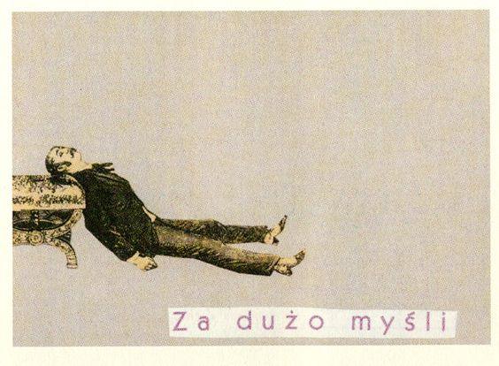
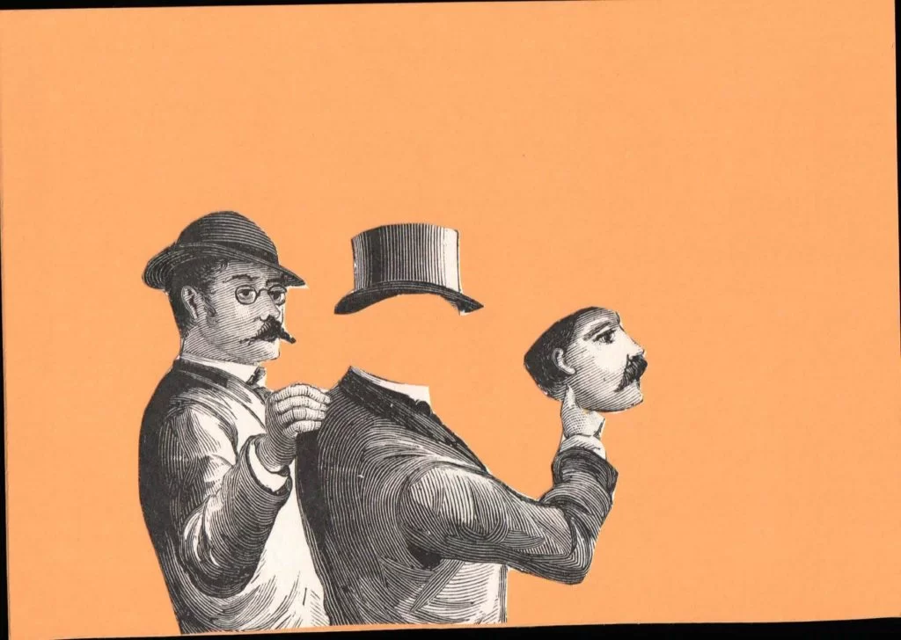
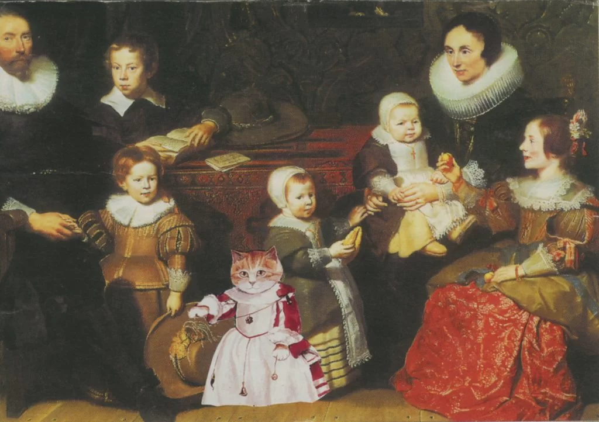

Wisława Szymborska (1923-2012) was a Nobel Prize-winning Polish poet, but she was also an occasional artist. Her main medium was quirky cut-and-paste postcards (in Polish wyklejanki) that she would create once a year and send to family and friends.

Wisława Szymborska’s cut-and-paste postcards are simple but imaginative collages made from a few different images pasted onto postcard-sized pieces of thick paper. The images, which sometimes include words in Polish, mainly come from vintage newspapers and magazines. Many of her collages are funny and ironic, like a woman playing tennis with a man’s tiny head as a tennis ball.
She combined images of differing sizes, color schemes, and styles, such as an oversized human mouth pasted onto a picture of a cat. Some of Szymborska’s cut-and-paste postcards use images from works of art. For example, one collage shows the princess from Velázquez’s Las Meninas in a grassy field with sheep. Sometimes, the message seems quite clear, but more often, the postcards express a strong but unidentifiable irony.

Szymborska started making her cut-and-paste postcards in the late 1960s. She claimed that her motivation was a simple fact that she couldn’t find any nice postcards to buy, but this seems unlikely. On the contrary, she must have spent a lot of time and effort creating the perfect design for each of her intended recipients. Only select people – those she believed would really appreciate them – received Szymborska’s postcards in the mail.
